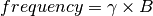

Exercise 2¶
Objectives¶
- Understanding why we need to remove the background magnetic field contributions before QSM
- Fine-tuning method parameters to improve the background field removal results
From frequency to magnetic field¶
In the Introduction, we mentioned the local frequency shift is the result of magnetic field inhomogeneity induced from brain tissues. Their relationship can be described by:
(1)¶
where  is the gyromagnetic ratio constant and
is the gyromagnetic ratio constant and  is the magnetic field experienced by the water protons.
is the magnetic field experienced by the water protons.
The linear relationship in Eq. (1) illustrates that the higher is the frequency we measured, the stronger is the local magnetic field the prontons experienced and the sign the frequency shift represents the direction of the local field (‘+ or positive’: same direction as the scanner field; ‘- or negative’: opposite to the scanner field).
One more step before computing QSM but why?¶
Eq. (1) allows us to map the local (or tissue) fields using the result from Exercise 1. However, in practice, the situation is more complicated than we think. Do you remember in the previous exercise we need to adjust the display windowing in order to see some brain structures? Why are these tissue contrasts ‘hidden’ in our images?
The short answer to these questions is simply because the phase shift in our original data is not localised. It means that the data contains not only the phase generated by the brain tissues but also by the scanner hardware imperfection and air/tissue interface such as sinuses. These non-tissue fields, or so-called background fields, can be one or two order(s) of magnitude strong than the tissue fields and affects the global brain tissues. Since we are only interested in the magnetic fields generated by the brain tissues, we have to remove these background fields before computing the QSM map. However, the background fields and tissue fields are co-existed across the whole brain. Distinguishing the sources of the magnetic fields is, therefore, an ill-conditioned problem. Luckily, the background fields have quite different mathematical properties and researchers have successfully developed some algorithms to separate the tissue fields from the background fields.

Figure 1: The total field we obatined from last exercise is the summation of tissue and background magnetic fields. In order to compute the magnetic susceptibility of the brain tissue correctly, the background field contributions have to be removed before the mapping the tissue susceptibilities.
Background Field Removal¶
SEPIA provides 7 methods to remove the background magnetic fields. Today we will use the Laplacian boundary values (LBV) algorithm. Go to the Background field removal tab. You will see two panels as the Phase unwrapping tab.
First, in the I/O panel, specify the Total field image (output/Sepia_total-field.nii.gz), Header file (Sepia_header.mat) and Brain mask (output/Sepia_mask.nii.gz) by using the open buttons.
Second, in the Background field removal panel, the ‘LBV’ method is shown by default. You have three parameters to adjust.
- ‘Tolerance’ is the threshold to stop the algorithm.
- ‘Depth’.
- ‘Peel’ is the layer of boundary voxels to be removed after computing the tissue (or so-called local) fields.
In this exercise, we will focus on the differences when using different ‘Peel’ values. Just leave these parameters as they are right now. Change the Output basename from Sepia to Sepia_peel-2 and then press the Start button. Again, you will see the message Done! when the process is finished. After the first processing is done, change the ‘Peel’ value to ‘4’ and change the Output Basename to Sepia_peel-4.
Use FSLeyes to display both output images at the same time. You can do this using the ‘+’ button. Use the ‘Opacity’ slide to alter the transparence of the top image. What is the main difference between the two results?
See answer here.
Proceed to Exercise 3.